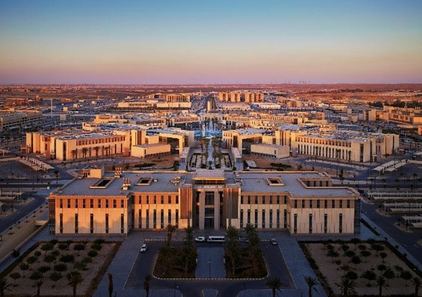

Welcome to King Saud University
Welcome to King Saud University! Since our founding in 1957, we have been dedicated to providing quality education and fostering a community of learning and growth. Our university is committed to academic excellence, innovative research, and the holistic development of our students. We offer a diverse range of programs designed to equip our students with the knowledge and skills needed to thrive in a rapidly changing world.
Our campus is a vibrant and inclusive environment where students from various backgrounds come together to learn, grow, and make lifelong connections. We pride ourselves on our state-of-the-art facilities, dedicated faculty, and a supportive community that encourages intellectual curiosity and personal growth.
At King Saud University, we believe in the power of education to transform lives and drive progress. We are dedicated to nurturing the next generation of leaders, innovators, and change-makers who will contribute to the betterment of our world. Together, we can achieve greatness and build a brighter future for all.
Our Vision
Our vision is to be a leading institution in higher education, fostering innovation and excellence in all our endeavors. We strive to create an environment that encourages intellectual curiosity, critical thinking, and lifelong learning. Our commitment to academic excellence is reflected in our diverse range of programs, cutting-edge research, and dedicated faculty.
We aim to equip our students with the knowledge, skills, and values necessary to thrive in a rapidly changing world. By fostering a culture of inclusivity and respect, we ensure that every member of our community feels valued and supported. Our vision extends beyond the classroom, as we seek to make a positive impact on society through community engagement, partnerships, and sustainable practices.
At King Saud University, we believe in the power of education to transform lives and drive progress. We are dedicated to nurturing the next generation of leaders, innovators, and change-makers who will contribute to the betterment of our world. Together, we can achieve greatness and build a brighter future for all.
Our Goals
- Provide quality education
- Undergraduate programs
- Graduate programs
- Foster innovation and research
- Research centers
- Innovation labs
- Promote community engagement
- Community service projects
- Partnerships with local organizations
- Encourage lifelong learning
- Continuing education programs
- Professional development courses
Departments
Top Departments
- Medical Department
- Medicine
- Nursing
- Business Department
- Accounting
- Marketing
- Law Department
- Corporate Law
- International Law
Our Alumni
King Saud University is proud of its distinguished alumni who have made significant contributions in various fields. Our alumni network includes prominent leaders, innovators, and professionals who continue to uphold the values and excellence of our institution. They serve as role models and mentors to our current students, inspiring them to achieve their full potential.
Our alumni are actively involved in the university community, participating in events, providing guest lectures, and supporting various initiatives. Their achievements and dedication reflect the quality of education and the strong foundation they received at King Saud University.